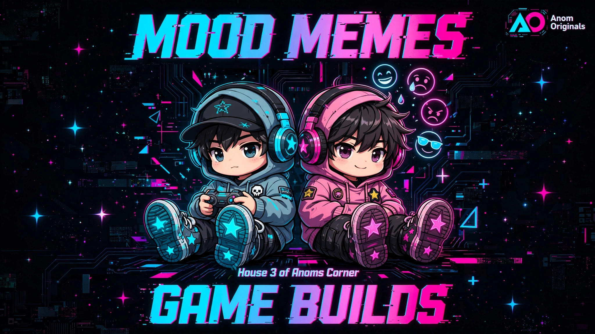

🌍 TERRAIN AO-COL-001 // Neon Environments - 10 AC = $1
50 AC ($5) • 100 AC ($10) • World textures
Anom Coin = 10 AC = $1 = wallet (Stripe). Earn +12 AC, +8 AC. Social Good Score = mission reputation — NOT currency.
50 AC ($5) • 100 AC ($10) • World textures


200 AC ($20) Moonberry • 250 AC ($25) Vault • 1000 AC ($100) Blueprint

Play to earn +12 AC, +8 AC. Mission-linked → +10 Social Good Score.
🔗 Play: anomartsy.xyz/games (games.procedures.ts)
100 AC ($10) unlock • 50 AC ($5) replay • + Social Good Score
Anom Coin = 10 AC = $1 = wallet. Social Good Score = reputation — NOT purchasable.
Mission → +10 Social Good Score → unlocks tools, not wallet.
/worlds.html mirror • CNAME anomarsty.lol • 10 AC = $1 ledger